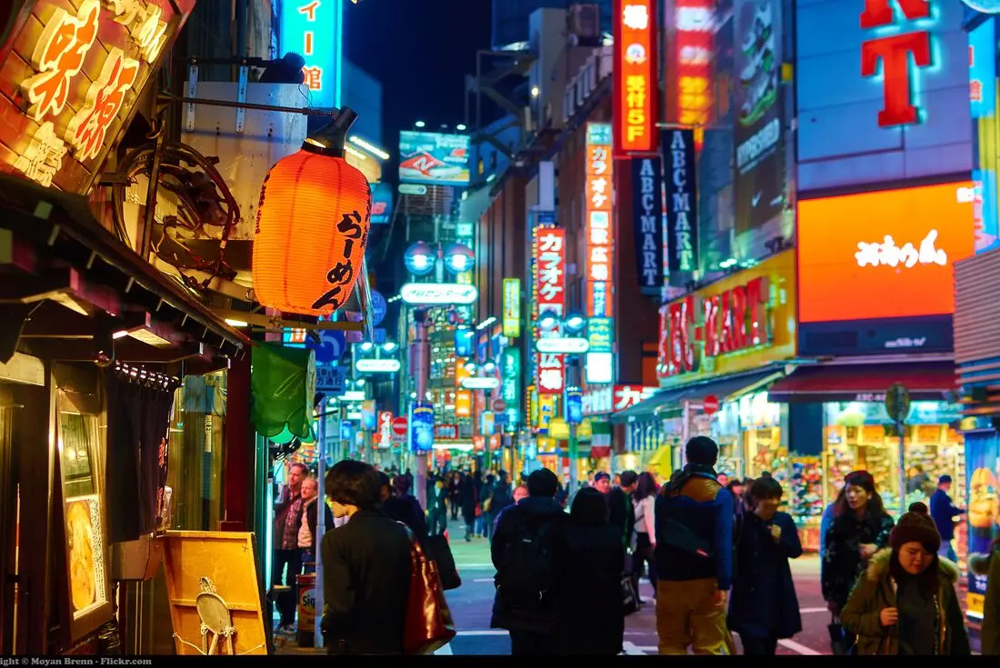
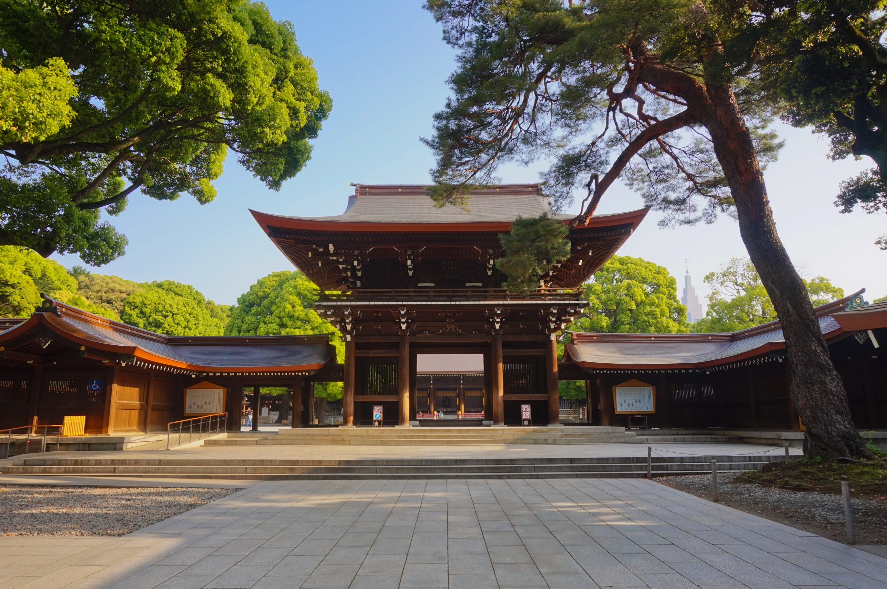
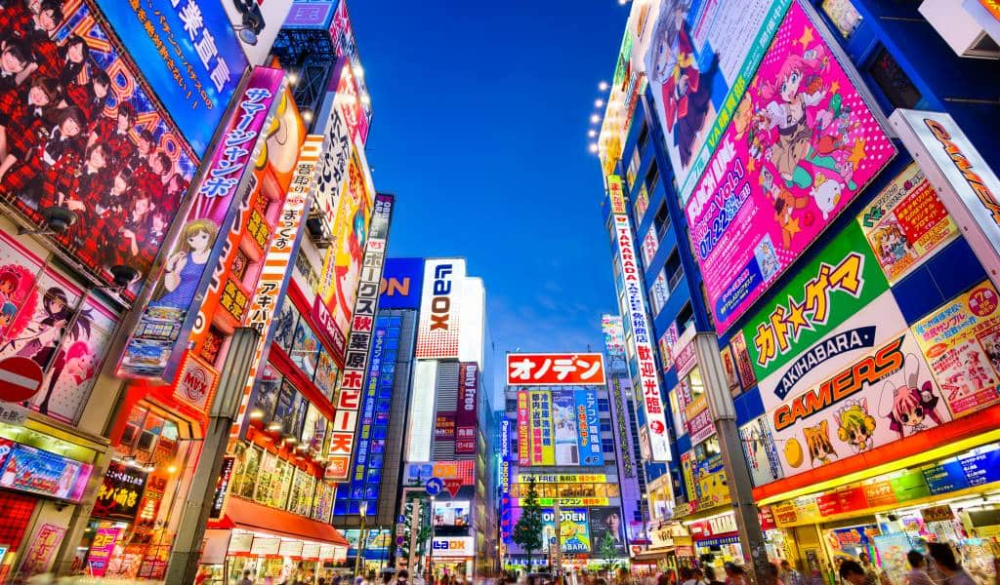

Japan Itinerary
13-Days Itinerary: Golden Route
☀️ OSAKA
Friday 24th Oct : Asakusa & Shibuya
- morning 9 AM
Visit the ancient Senso-ji Temple in Asakusa. Walk down the historic Nakamise-dori street for souvenirs. - lunch 1 PM
Enjoy a traditional tempura or soba lunch near the temple. - afternoon 3 PM
Head to Shibuya. Cross the iconic Shibuya Scramble Crossing. - evening 7 PM
Dinner in Shibuya. Find a spot overlooking the crossing or explore the lively Nonbei Yokocho (Drunkard's Alley).

Saturday 25th : Shinjuku & Meiji Shrine
- morning 10 AM
Find tranquility at the Meiji Jingu Shrine, a large forest sanctuary dedicated to Emperor Meiji. - lunch 1 PM
Explore Harajuku (next to Meiji Shrine). Grab a quirky crepe or a stylish bowl of ramen. - afternoon 3 PM
Go up the Tokyo Metropolitan Government Building in Shinjuku for free city views. - evening 8 PM
Experience Shinjuku's nightlife. Visit Golden Gai for tiny, atmospheric bars or **Omoide Yokocho** (Piss Alley) for grilled skewers.

Sunday 26th : Akihabara & Ginza
- morning 11 AM
Dive into Akihabara, the electric town. Explore electronics, anime, and gaming shops. - lunch 1 PM
Find a themed café or a fast-casual eatery in Akihabara. - afternoon 3 PM
Switch gears and explore the upscale district of Ginza for high-end shopping and architecture. - evening 6 PM
View the city from the Tokyo Skytree or Tokyo Tower, followed by a final dinner.

🚄 Travel Tip
The Shinkansen connects these hubs. A 14-day JR Pass is recommended for seamless travel between Tokyo, Kyoto, Osaka, and Hiroshima/Day Trips.